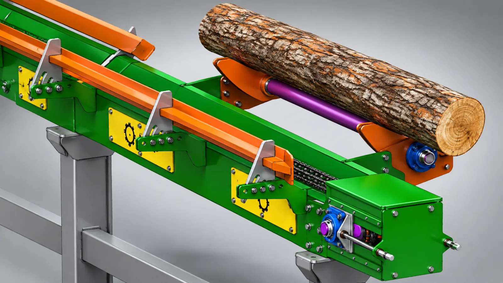
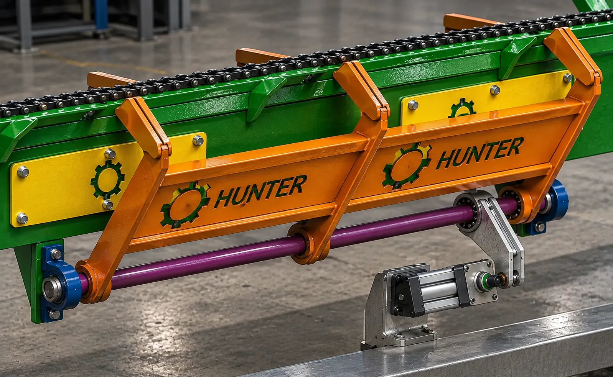
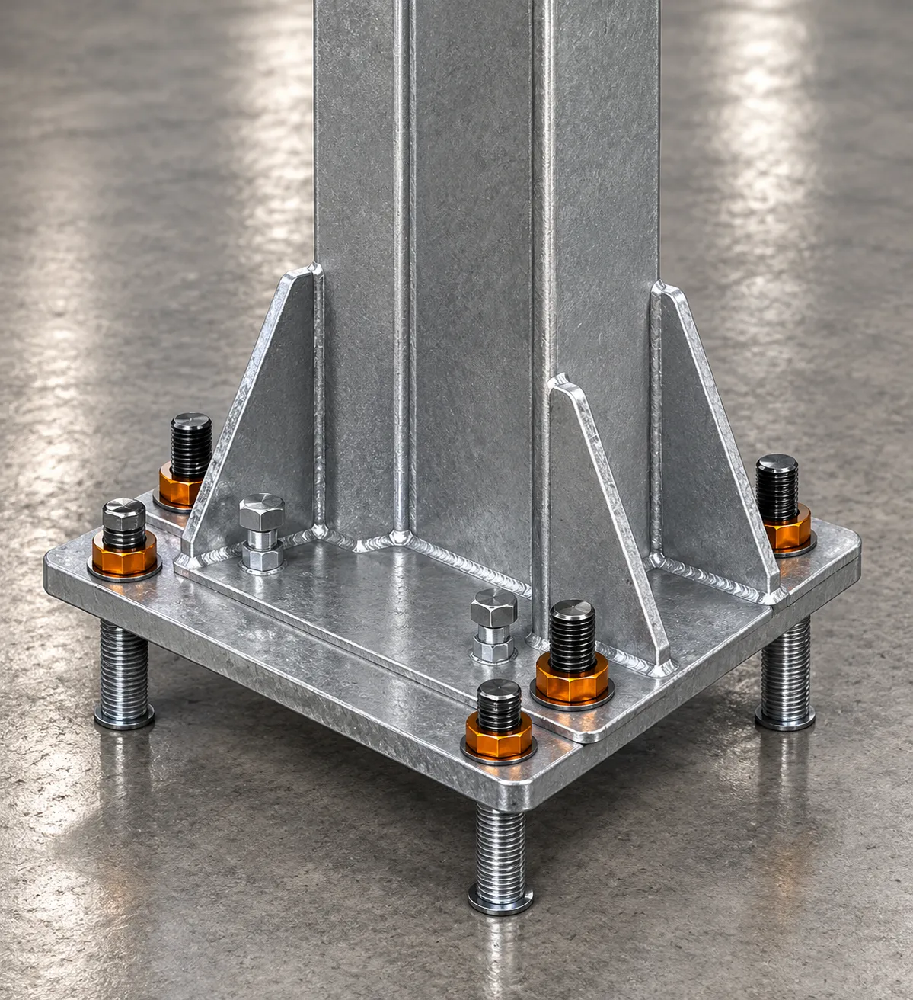
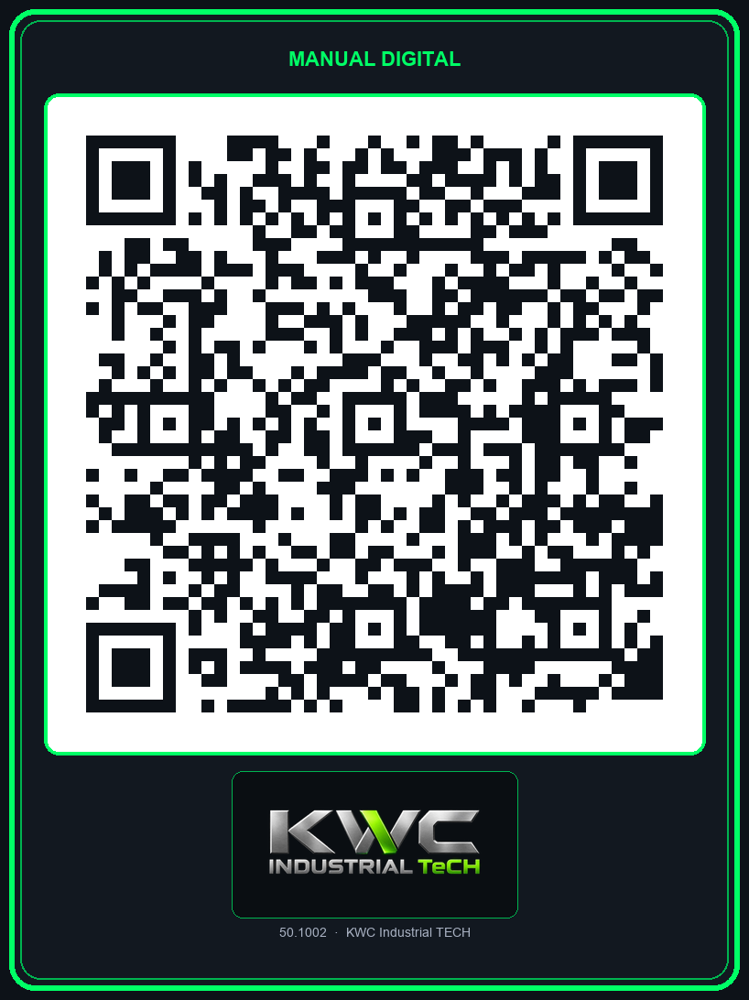

Manual Técnico Digital
ESTEIRA ARRASTADORA DE TORAS — COD. 50.1002

1. Visão Geral do Equipamento
Vista geral da Esteira Arrastadora de Toras 50.1002, projetada em dois módulos para facilitar o transporte, com guias laterais, sistema de tração, tensionador e conjuntos de tombamento.
Apresentação do Projeto
Projeto: KWC Industrial TECH / Hunter Engenharia
Fabricação: Hunter Engenharia
Documentação de instalação, operação, manutenção e segurança da Esteira Arrastadora de Toras (Código 50.1002).
Concepção modular (transporte): a esteira foi projetada em 2 módulos para facilitar o transporte e a montagem em campo:
- Módulo 1 — Tração: cabeceira de tração, motorredutor e eixo de acionamento.
- Módulo 2 — Tensionador: cabeceira tensionadora, mancal F214 e sistema de tensionamento das correntes.
Na união entre os módulos (meio da esteira) usam-se base e contrabase de união, fixadas com parafusos M20.
Fluxo operacional: na entrada, um unitizador de toras garante a alimentação de uma tora por vez: a tora cai ao lado da cabeceira de tração e só depois que ela sai da frente o unitizador aproxima / libera a próxima. Em seguida a tora é transportada por todo o percurso por 3 correntes ASA 2120. Sensores identificam o posicionamento e acionam o cilindro pneumático do tombador, que expulsa a tora e alimenta a Linha 1. Se a Linha 1 estiver cheia, o sistema passa automaticamente para a Linha 2, com a mesma lógica por sensores.
Identificação do Equipamento
settings_input_component 1. Sistema de Tração
Esteira Arrastadora de Toras — Código 50.1002
1.1 Descrição Geral — Módulo 1 (Tração)

2. Cabeceira de tração (Módulo 1)
A cabeceira de tração (50.1002.004) concentra motorredutor, eixo e engrenagens e define o ponto de recepção. Na entrada, o unitizador de toras controla a queda para alimentar uma tora por vez: somente após a tora sair da frente o unitizador aproxima / libera a próxima. A tora cai ao lado desta cabeceira e segue o percurso completo arrastada por 3 correntes ASA 2120.

3. Unitizador de toras — 1 tora por vez
1.2 Motorização
- Motorredutor: FA87DRN160M4 — montagem em eixo oco no eixo de tração (50.1002.028)
- Função: reduzir rotação e elevar torque para arraste de carga
- Montagem: instalado com a folga exigida pelo fabricante
- Antigiro: parafuso M20
Desmontagem do motorredutor:
- Aplicar LOTO (energia e carga bloqueadas).
- Afrouxar o parafuso M20 do antigiro.
- Puxar aos poucos o motorredutor do eixo de tração (eixo oco), sem impacto brusco.
- Na remontagem, respeitar a folga exigida pela fábrica e reapertar o antigiro M20.
1.3 Eixo e Engrenagens
- Eixo de tração — 50.1002.028 (recebe o eixo oco do motorredutor)
- Engrenagem de tração — 50.1002.027
- Fixações: anéis Sit-Lock e mancais F/P/FC conforme BOM
1.4 Tensionamento — Módulo 2

4. Cabeceira tensionador (Módulo 2)
- Cabeceira tensionador — 50.1002.019
- Mancal F214 (base — 50.1002.022)
- Engrenagem / guias — 50.1002.024 / 50.1002.025
- Barras roscadas M24 para tensionamento
Procedimento: afrouxe as contra porcas e aperte as porcas tensoras nas barras M24 para tensionar as correntes ASA 2120. Tensionar de forma simétrica nas laterais, eliminar folga sem sobrecarregar o mancal F214, travar novamente as contra porcas e conferir alinhamento das cabeceiras.
1.5 Guias Laterais

5. Guias laterais — ajustadores de ângulo
Guias laterais (50.1002.006) contêm a carga no percurso e possuem ajustadores de ângulo que permitem abrir ou fechar mais a esteira: para regular, afrouxar os parafusos M16, posicionar o ângulo desejado e reapertar.
1.5.1 Guias / chapas de saída

5.1 Guias de saída — regulagem na descarga
Na saída das esteiras há guias / chapas de saída com regulagem de ângulo, para ajustar melhor a saída da tora em direção às linhas.
1.6 Tombadores e Sensores

6. Tombador — expulsão Linha 1 / Linha 2
Há 2 tombadores de toras na esteira. Na descarga, sensores de posicionamento detectam a tora; o sinal aciona o cilindro pneumático Ø100 curso 100, que opera o tombador para expulsar a tora da esteira e alimentar a Linha 1. Se a Linha 1 estiver cheia, a descarga é redirecionada automaticamente para a Linha 2 (mesma lógica por sensores).
Ajuste de posição do tombador: regulado pelas buchas Sit-Lock no eixo Ø50 inferior — afrouxar as Sit-Locks, deslocar o tombador e reapertar conforme torque do fabricante.
1.7 União dos Módulos

7. Base e contrabase de união (M20)
União Módulo 1 ↔ Módulo 2: no meio da esteira utiliza-se base e contrabase de união, fixadas com parafusos M20. Alinhar os módulos, montar base/contrabase e apertar os M20 de forma uniforme.
1.8 Sapatas / Fixação ao Piso

8. Sapata — nivelamento e fixação
As sapatas (bases de pé 50.1002.015 e contra-bases 50.1002.038) possuem parafusos de nivelamento e parafusos de fixação.
- Nivelamento: ajustar os parafusos até a esteira ficar alinhada e estável.
- Fixação ao piso: utilizar chumbadores químicos industriais para melhor ancoragem.
- Parafusos de fixação: apertar após o nivelamento e a cura do chumbador químico.
build_circle Componentes Principais
Seleção crítica da lista de materiais 50.1002.
| Item | Código | Componente | Qtd | Aplicação | Orçamento |
|---|---|---|---|---|---|
| 1 | 50.1002.001 | Chassi / estrutura | — | 2 módulos (transporte) | shopping_cart Cotar |
| 1b | Módulo 1 | Módulo de tração | 1 | Cabeceira + acionamento | shopping_cart Cotar |
| 1c | Módulo 2 | Módulo tensionador | 1 | Cabeceira tensionadora | shopping_cart Cotar |
| 1d | M20 | Base + contrabase de união | — | Fixação entre módulos | shopping_cart Cotar |
| 1a | — | Unitizador de toras | 1 | Entrada (1 tora/vez) | shopping_cart Cotar |
| 2 | 50.1002.004 | Cabeceira de tração | 1 | Acionamento | shopping_cart Cotar |
| 3 | 50.1002.019 | Cabeceira tensionador + mancal F214 | 1 | Tensão (barras M24) | shopping_cart Cotar |
| 3a | M24 | Barras roscadas / porcas tensoras | — | Tensionamento | shopping_cart Cotar |
| 4 | 50.1002.028 | Eixo de tração | 1 | Transmissão | shopping_cart Cotar |
| 5 | 50.1002.027 | Engrenagem tração | 1 | Corrente | shopping_cart Cotar |
| 6 | 50.1002.006 | Guia lateral (ajustador de ângulo) | várias | Abrir/fechar esteira | shopping_cart Cotar |
| 6a | M16 | Parafusos ajustadores das guias | — | Afrouxar para ajustar ângulo | shopping_cart Cotar |
| 7 | 50.1002.015 | Sapata / base pé | 7 | Nivelamento + fixação | shopping_cart Cotar |
| 7a | — | Chumbador químico industrial | — | Ancoragem no piso | shopping_cart Cotar |
| 8 | 50.1002.035 | Tombador de toras | 2 | Expulsão → Linha 1 / Linha 2 | shopping_cart Cotar |
| 8d | — | Chapa de saída (regulagem de ângulo) | — | Ajuste saída da tora | shopping_cart Cotar |
| 8a | — | Sensores (posição / ocupação) | — | Tora + Linha 1/2 cheia | shopping_cart Cotar |
| 9 | ASA 2120 | Corrente de arrasto | 120 m | 3 linhas / transporte | shopping_cart Cotar |
| 9a | ASA 2120 | Emenda de corrente | 3 | Emenda das linhas | shopping_cart Cotar |
| 10 | FA87DRN160M4 | Motorredutor eixo oco | 1 | Acionamento | shopping_cart Cotar |
| 10a | M20 | Parafuso antigiro | 1 | Retém motorredutor | shopping_cart Cotar |
| 11 | Mancais | Kit mancais F/P/FC | — | Eixos | shopping_cart Cotar |
precision_manufacturing Peças de Reposição — Tombador de Toras
A esteira possui 2 tombadores de toras. Abaixo, as peças de reposição de cada tombador:
Kit de reposição do tombador
| Item | Componente | Qtd / tombador | Aplicação | Orçamento |
|---|---|---|---|---|
| 1 | Mancal P210 | 2 | Apoio do eixo do tombador | shopping_cart Cotar |
| 2 | Rolamento EX210 | 2 | Rolamento do tombador | shopping_cart Cotar |
| 3 | Anel de fixação Ø80 × 50 | 4 | Fixação no eixo | shopping_cart Cotar |
| 4 | Cilindro pneumático Ø100 curso 100 | 1 | Acionamento do tombador | shopping_cart Cotar |
| 5 | Articulador traseiro macho p/ cilindro Ø100 | 1 | Articulação do cilindro | shopping_cart Cotar |
| 6 | Articulador traseiro fêmea p/ cilindro Ø100 | 1 | Articulação do cilindro | shopping_cart Cotar |
| 7 | Ponteira rotular M20 | 1 | Extremidade / articulação | shopping_cart Cotar |
Total no equipamento (2 tombadores): 4× mancal P210 · 4× rolamento EX210 · 8× anel fix Ø80×50 · 2× cilindro Ø100 curso 100 · 2× articulador macho · 2× articulador fêmea · 2× ponteira rotular M20.
precision_manufacturing Peças de Reposição — Unitizador de Toras
Sistema unitizador de toras na entrada (1 tora por vez). Peças de reposição do conjunto:
Sistema unitizador — entrada
| Item | Componente | Qtd | Aplicação | Orçamento |
|---|---|---|---|---|
| 1 | Mancal FC210 | 2 | Apoio do eixo do unitizador | shopping_cart Cotar |
| 2 | Rolamento EX210 | 2 | Rolamento do unitizador | shopping_cart Cotar |
| 3 | Anel de fixação Ø80 × 50 | 3 | Fixação no eixo | shopping_cart Cotar |
| 4 | Cilindro pneumático Ø100 curso 200 | 1 | Acionamento do unitizador | shopping_cart Cotar |
| 5 | Articulador traseiro macho p/ cilindro Ø100 | 1 | Articulação do cilindro | shopping_cart Cotar |
| 6 | Articulador traseiro fêmea p/ cilindro Ø100 | 1 | Articulação do cilindro | shopping_cart Cotar |
| 7 | Ponteira rotular M20 | 1 | Extremidade / articulação | shopping_cart Cotar |
precision_manufacturing Peças de Reposição — Cabeceira Tensionadora
Peças de reposição da cabeceira tensionadora (Módulo 2):
Cabeceira tensionadora — peças de reposição
| Item | Componente | Qtd | Aplicação | Orçamento |
|---|---|---|---|---|
| 1 | Mancal F214 | 2 | Apoio do eixo tensionador | shopping_cart Cotar |
| 2 | Rolamento EX214 | 2 | Rolamento do tensionador | shopping_cart Cotar |
| 3 | Barra roscada M24 × 650 mm (aço inox) | 2 | Tensionamento das correntes | shopping_cart Cotar |
| 4 | Engrenagem tripla fabricada HUNTER | 1 | Acionamento das 3 correntes ASA 2120 | shopping_cart Cotar |
precision_manufacturing Peças de Reposição — Cabeceira de Tração
Peças de reposição da cabeceira de tração (Módulo 1):
Cabeceira de tração — peças de reposição
| Item | Componente | Qtd | Aplicação | Orçamento |
|---|---|---|---|---|
| 1 | Mancal FC214 | 2 | Apoio do eixo de tração | shopping_cart Cotar |
| 2 | Rolamento EX214 | 2 | Rolamento da cabeceira de tração | shopping_cart Cotar |
| 3 | Anel de fixação Ø110 × 70 | 2 | Fixação no eixo | shopping_cart Cotar |
| 4 | Motorredutor FA87DRN160M4 (eixo oco) | 1 | Acionamento | shopping_cart Cotar |
| 5 | Engrenagem tripla fabricada HUNTER | 1 | Acionamento das 3 correntes ASA 2120 | shopping_cart Cotar |
precision_manufacturing Peças de Reposição — Corrente ASA 2120
Correntes de arrasto do transporte (3 linhas):
| Item | Componente | Qtd | Aplicação | Orçamento |
|---|---|---|---|---|
| 1 | Corrente ASA 2120 | 120 m | Transporte das toras (3 linhas) | shopping_cart Cotar |
| 2 | Emenda de corrente ASA 2120 | 3 | Emenda / fechamento das linhas | shopping_cart Cotar |
play_circle_outline Instruções de Operação
Operação por pessoal treinado. A esteira 50.1002 move toras com elevada inércia.
Fluxo de transporte e descarga
- Unitizador (entrada): separa e alimenta uma tora por vez. Só aproxima / libera a próxima depois que a tora da frente sai da zona de queda.
- Recepção: a tora cai no início da linha, ao lado da cabeceira de tração.
- Transporte: três correntes ASA 2120 arrastam a tora por todo o percurso.
- Sensor de posição: sensores verificam o posicionamento da tora na zona de descarga.
- Seleção de linha: sensores de ocupação consultam a Linha 1; se estiver cheia, o sistema passa automaticamente para a Linha 2.
- Acionamento: com posição e destino válidos, o cilindro pneumático aciona o tombador correspondente.
- Expulsão: o tombador expulsa a tora da esteira e alimenta a Linha 1 ou a Linha 2 (mesma lógica por sensores).
- Chapas de saída: regulam o ângulo na saída para direcionar melhor a tora à linha selecionada.
Procedimento de Partida
- Linha livre de ferramentas, calços e pessoas na área de risco (incluindo unitizador e zona de queda junto à cabeceira de tração).
- Conferir unitizador (intertravamento: libera próxima só com frente livre), tensão das 3 correntes ASA 2120 e aperto de mancais.
- Confirmar emergência desacionada.
- Energizar painel e reset de segurança.
- Partida do motorredutor e verificação de sincronismo das três linhas antes de liberar a recepção de toras.
PARADA DE EMERGÊNCIA
Corta o acionamento imediatamente. Rearme só com área segura e causa eliminada.
construction Planos de Manutenção
Recomendações da engenharia KWC Industrial TECH para a linha Hunter 50.1002.
| Ação / Foco | Intervalo | Responsável | Orçamento |
|---|---|---|---|
| Inspeção visual das 3 correntes ASA 2120 | Diário | Operador | shopping_cart Cotar |
| Unitizador (1 tora/vez / frente livre) | Diário | Operador | shopping_cart Cotar |
| Ruídos / vibração em mancais | Diário | Operador | shopping_cart Cotar |
| Aperto de guias (M16) e união dos módulos (M20) | Semanal | Manutenção | shopping_cart Cotar |
| Ângulo das guias laterais (abrir/fechar) | Conforme necessidade | Manutenção | shopping_cart Cotar |
| Ângulo das chapas de saída | Conforme necessidade | Manutenção | shopping_cart Cotar |
| Sapatas: nivelamento + fixação / chumbadores | Semanal / após assentamento | Manutenção | shopping_cart Cotar |
| Tensão das correntes / barras M24 (F214) | Semanal | Manutenção | shopping_cart Cotar |
| Sensores (posição/ocupação L1–L2) + tombador / cilindro pneumático Ø100 | Quinzenal | Manutenção | shopping_cart Cotar |
| Engrenagens e Sit-Locks | Mensal | Manutenção | shopping_cart Cotar |
| Posição tombador (Sit-Lock no eixo Ø50 inferior) | Mensal / após ajuste | Manutenção | shopping_cart Cotar |
oil_barrel Lubrificação
| Componente | Lubrificante | Intervalo | Observações |
|---|---|---|---|
| Correntes ASA 2120 (3 linhas) | Óleo/graxa para corrente | Semanal | Evitar excesso (serragem) |
| Mancais | Graxa EP multilítio | Mensal | Engraxadeiras |
| Motorredutor (eixo oco) | Conforme FA87 | Manual do redutor | Nível / vazamentos; folga de fábrica |
| Parafuso antigiro M20 | — | A cada desmontagem | Afrouxar para retirar; reapertar na montagem |
| Articulações / cilindro pneumático | Graxa EP | Mensal | Pivôs dos tombadores |
ATENÇÃO
Lubrifique somente com esteira parada e LOTO aplicado.
troubleshoot Diagnóstico de Falhas
Clique em Expandir para ver a ação recomendada de cada falha.
Ação: conferir sensor de “frente livre”, curso do mecanismo e intertravamento (só aproxima após a tora sair da frente).
Ação: afrouxar contra porcas, apertar porcas tensoras nas barras M24 (mancal F214), inspecionar elos e alinhar cabeceiras; travar contra porcas.
Ação: graxa, Sit-Lock e engrenagem 50.1002.027.
Ação: confirmar afrouxamento do parafuso M20 do antigiro e puxar aos poucos o eixo oco do eixo de tração, sem alavancar de forma brusca. Na remontagem, manter a folga exigida pela fábrica.
Ação: conferir sensor de posição, pressão pneumática, cilindro Ø100, articulações e base do cilindro.
Ação: afrouxar as buchas Sit-Lock no eixo Ø50 inferior, reposicionar o tombador e reapertar as Sit-Locks.
Ação: validar sensores de posição e de ocupação, alinhamento do tombador (Sit-Lock Ø50), sincronismo e curso completo do cilindro pneumático.
Ação: checar sensor de ocupação da Linha 1, lógica de prioridade L1→L2 e acionamento do tombador da Linha 2.
Ação: afrouxar os parafusos M16 dos ajustadores de ângulo, abrir ou fechar as guias conforme necessário e reapertar os M16.
Ação: ajustar a regulagem de ângulo das guias / chapas de saída na descarga para melhorar o direcionamento da tora à Linha 1 ou Linha 2.
Ação: conferir alinhamento Módulo 1–Módulo 2, base e contrabase de união e aperto dos parafusos M20.
Ação: ajustar parafusos de nivelamento das sapatas, conferir parafusos de fixação e integridade dos chumbadores químicos industriais; equalizar tensão e reapertar uniões M20.
verified_user Segurança Geral (NR-12)
A Esteira 50.1002 deve operar alinhada à NR-12.
BLOQUEIO ELÉTRICO E MECÂNICO (LOTO)
Desligue o disjuntor principal e aplique cadeado pessoal antes de qualquer intervenção.
Equipamento Hunter Engenharia · Código 50.1002
qr_code_2 Manual Digital — QR Code
Escaneie o QR Code para abrir este manual no celular ou compartilhar o acesso.

kwcindustrialtech.github.io/manual-50-1002-esteira-arrastadora